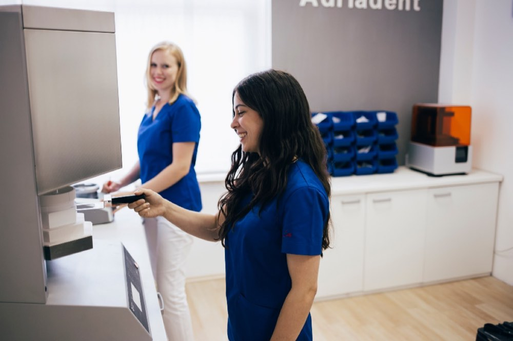

Dentalnim implantatima nadomještamo jedan ili više izgubljenih zubi i na najbolji mogući način vraćamo funkciju i estetiku. Implantati su od titana, biokompatibilnog materijala koji tijelo u potpunosti prihvaća.
Radom po pravilima struke, Premium implantatima Nobel Biocare – uz koje dobivate certifikat doživotnog jamstva – i dobrom oralnom higijenom nakon zahvata mogućnost odbacivanja implantata svodimo na minimum.
Vrste radova na implantatima
Nadoknada jednog zubaMost na implantatimaLokatoriPrečkaFiksni rad na 6 implantataAll on 4
Tijek terapije
Detaljan pregledNa temelju pregleda i panoramske snimke planiramo terapiju i izrađujemo predračun.
Rendgenske snimkeUz panoramsku snimku za ugradnju je potrebna i trodimenzionalna CT snimka.
Planiranje terapijeCT snimka, fotografije i analiza modela omogućuju precizno planiranje položaja implantata.
Ugradnja implantataIzvodi se uz lokalnu anesteziju.
Cijeljenje (osteointegracija)Od 3 do 6 mjeseci, dok implantat srasta s okolnom kosti.
Protetski nadomjestakImplantat se otvara, uzima se otisak i izrađuje definitivan rad. Nakon toga kontrola svakih 6 mjeseci.
02 / All on 4Sigurno · brzo · povoljno
Fiksni rad u jednom danu, na četiri implantata.
Suvremena implantološka metoda za pacijente bez zubi ili sa zubnom protezom. Četiri implantata postavljaju se u bezubu čeljust, a na njima se izrađuje fiksni privremeni most. Nakon 6 mjeseci izrađuje se definitivni fiksni most.
Minimalno invazivnu metodu predstavio je dr. Paulo Malo 1998. godine; do danas su njome liječene stotine tisuća pacijenata, a više stotina znanstvenih radova potvrđuje je kao sigurnu i uspješnu.
Tijek terapije
Detaljan pregledPregled i panoramska snimka, plan terapije i predračun.
Rendgenske snimkeUz panoramsku nužna je i trodimenzionalna CT snimka.
Planiranje terapijeCT snimka, fotografije i analiza modela za precizan položaj implantata.
Ugradnja implantataUključuje vađenje zubi ako je potrebno, te ugradnju implantata u istoj posjeti.
Privremeni rad24 sata nakon zahvata predaje se privremeni fiksni rad.
CijeljenjeŠest mjeseci tijekom kojih implantati srastaju s okolnom kosti.
Trajni radUzima se otisak i izrađuje definitivan fiksni rad. Kontrola svakih 6 mjeseci.
Fiksni aparatić ili aligneri – u svakoj životnoj dobi.
Ortodoncija ispravlja nepravilan položaj zubi i zagriz, a često je i priprema za veće protetske radove. Odabir terapije ovisi o dobi, vrsti nepravilnosti i Vašim željama.
Fiksni aparatić
Metalne ili gotovo prozirne keramičke bravice, fiksirane na zube tijekom cijele terapije. Terapija najčešće traje 18 mjeseci.
Aligneri
Prozirne udlage koje mogu postići učinkovitost fiksnog aparatića: potpuno prozirne, udobne i uz bolju oralnu higijenu. Zahtijevaju i manje kontrolnih posjeta.
Iako se ortodontska terapija najčešće provodi u adolescenciji, moguća je u svakoj životnoj dobi – zato se sve više odraslih pacijenata odlučuje za alignere.
„U današnje vrijeme nitko ne zaslužuje umrijeti sa zubima u čaši.”Per-Ingvar Brånemark
Krunice
Kad je struktura zuba toliko narušena da se ne može nadoknaditi ispunom – često kod endodontski liječenih zubi, koje krunica štiti od frakture.
Mostovi
Izvrsno rješenje kad zbog nedostatka kosti implantološka terapija nije moguća, ili kad su susjedni zubi već oštećeni ili liječeni.
Djelomične proteze
Kod nedostatka jednog ili više zubi; metalnim kvačicama priliježu na susjedne zube.
Totalne proteze
Akrilatna proteza koja leži na mekom i koštanom tkivu bezubog grebena, kad nedostaju svi zubi čeljusti.
Tijek izrade krunice ili mosta
Detaljan pregledPregledom i analizom utvrđujemo najbolji odabir nadoknade.
Rendgenske snimkeUtvrđujemo stanje zubi – budućih nosača mosta ili krunica.
Planiranje terapijeIndividualni plan i objašnjenje svakog koraka.
BrušenjePrecizno uklanjanje zubne strukture daje prostor za novi rad.
OtisciModel zubi na kojem digitalno dizajniramo protetski rad.
CementiranjeKad je rad estetski, funkcijski i dosjedom savršen, trajno ga cementiramo.
06 / Oralna kirurgijaLokalna anestezija
Kirurški zahvati u usnoj šupljini.
Najčešće radimo vađenje zubi i zaostalih korijenova, operativno i neoperativno vađenje umnjaka te apikotomiju. Svi pacijenti dobivaju lijekove i sve informacije za sprječavanje postoperativnih komplikacija.
Operativno vađenje
Težina zahvata i oporavak ovise o položaju zuba u čeljusti; ponekad je potrebno ukloniti i dio kosti.
Umnjaci
Ako se upala oko umnjaka ponavlja više od dva puta godišnje, umnjak je potrebno izvaditi. Blaga bol i oteklina nakon zahvata su normalne.
Resekcija – apikotomija
Kad liječenjem zuba nije sanirana upala oko vrha korijena; zahtijeva minimalni rez u projekciji vrha korijena.
Podizanje sinusa
Koštanom regeneracijom povećavamo prostor za implantate kad se nakon dužeg nedostatka zubi smanji volumen kosti.
07 / EndodoncijaCilj: spasiti svaki zub
Liječenje zuba – i zub ostaje u ustima.
Endodoncija liječi bolesti zubne pulpe, odnosno živca. Sve se faze izvode uz anesteziju. Liječenje ne završava punjenjem kanala, nego opskrbom zuba kvalitetnim ispunom ili krunicom.
PregledDetaljan pregled i razgovor o prirodi simptoma.
Rendgenske snimkeProvjeravamo postoji li upalni proces oko korijena zuba.
Vađenje živca i lijekUklanjamo bol i dezinficiramo prostor zubnog živca.
Zamjena uloškaOsiguravamo početak cijeljenja oko vrha korijena prije definitivnog punjenja.
3D punjenje kanalaToplom gutaperkom, za trodimenzionalno brtvljenje kanala.
RekonstrukcijaIspunom ili krunicom, ovisno o količini izgubljene strukture.
08 / Parodontologija
Zdravo zubno meso, čvrsti zubi.
Parodontologija liječi potporne strukture zuba – zubno meso, kost i parodontna vlakna. Pravilna i redovita higijena najjednostavniji je način da spriječite gingivitis i parodontitis.
Gingivitis
Crvenilo, oteklina i krvarenje pri četkanju zbog nakupljenog plaka i kamenca. Pravovremeno liječenje sprječava napredovanje bolesti.
Parodontitis
Propadanje potpornih struktura zuba; prema nekim istraživanjima češće od karijesa dovodi do gubitka zuba. Kontrola i čišćenje kamenca dva puta godišnje.
Parodontna kirurgija
Prekrivanje recesija zubnog mesa i produljenje kliničke krune zuba, za sklad crveno-bijele estetike.
Oralna higijena
Kako četkati, koju četkicu, konac ili interdentalne četkice – naši stomatolozi rado će Vas podučiti.
09 / Dječja stomatologija
Prvi posjet – s prvim mliječnim zubom.
Prvi posjet stomatologu preporučeno je planirati između 6 mjeseci i godine dana. Dijete se upoznaje s ordinacijom, a roditelji dobivaju savjete o oralnoj higijeni i prehrani.
Redovite kontrole
Kontrola svakih 6 mjeseci: dijete upoznaje doktora, instrumente i zvukove, a strah se ne razvija. Najgora opcija je čekati da zub zaboli.
Ortodoncija u najmlađoj dobi
Prvi posjet ortodontu u dobi od 7 godina. Fiksna terapija najčešće počinje između 12. i 14. godine.
Tijek nicanja mliječnih zubi
6–12 mj.gornji i donji centralni sjekutići
9–16 mj.gornji i donji lateralni sjekutići
13–19 mj.prvi mliječni kutnjaci (četvorke)
16–23 mj.mliječni očnjaci (trojke)
23–33 mj.kompletira se mliječna denticija – deset zubi gore i deset dolje
10 / Dentalni laboratorijU sklopu centra
Novi protetski rad u manje od 24 sata.

Laboratorij unutar centra znači jednostavniju komunikaciju stomatologa i tehničara – a time bržu i kvalitetniju izradu svih radova.
CAD/CAM
Računalno dizajniranje i izrada nadomjestka: brže od konvencionalne tehnike, uz visoku preciznost i dugotrajnost.
3D printanje
Modeli za izradu alignera i simulacija novog osmijeha (digitalni wax-up) prije izrade rada.
Certificirani materijali
Isključivo visokokvalitetni materijali poznatih svjetskih proizvođača.
Udlage protiv škripanja
Noćne udlage štite zubnu strukturu od trošenja zbog stiskanja i škripanja zubi.
11 / Upute za pacijenteNakon zahvata
Upute za pacijente.
Nakon ugradnje implantata
Držite stisnutu vaticu pola sata, izvadite je i popijte prvu tabletu protiv bolova; drugu po potrebi nakon 4 sata.
Antibiotik i deksametazon popijte do kraja prema uputama stomatologa.
Prva 2 dana ne mućkajte i ne ispirajte usta; zube perite samo vodom, bez paste, i ne četkajte područje oko šavova.
Hladite što više, hladnim oblozima izvana.
Jedite na suprotnoj strani hladnu ili mlaku hranu; pijte iz čaše (ne iz boce, ne na slamku).
Obavezno izbjegavajte duhanske proizvode 15 dana nakon zahvata.
Izbjegavajte fizičku aktivnost i sunce 48–72 sata nakon zahvata.
Šavovi se skidaju 7 dana nakon zahvata – ne dirajte ih jezikom ni četkicom.
Nakon operativnog zahvata
Gazu držite pritisnutu zubima 30 minuta.
Odmah počnite hladiti: led izvana 10 minuta, pa 5 minuta pauze; ponavljajte što češće tijekom dana.
30 minuta nakon zahvata popijte prvu tabletu protiv bolova; po potrebi svaka 4 sata.
Prva 24 sata ne ispirajte usta, ne žvačite i ne četkajte na operiranoj strani.
2–3 dana izbjegavajte pušenje, toplu i tvrdu hranu i piće, fizičku aktivnost i sunce.
Konci se vade 2 tjedna nakon operacije.
Nakon zahvata All on 4
Tijekom cijeljenja (3–4 mjeseca; najkritičnije od 15. dana do 2,5 mjeseca) jedite isključivo mekanu ili usitnjenu hranu i ne otkidajte hranu privremenim radom.
Obavezno izbjegavajte duhanske proizvode 15 dana nakon zahvata.
Prvih 15 dana ispirajte usta tekućinom na bazi klorheksidina, a zatim koristite interdentalnu četkicu i oralni tuš.
Prva 2–3 dana hladite oblozima izvana; izbjegavajte fizičku aktivnost i sunce 48–72 sata.
Kod nejasnoća ili komplikacija javite se na 051 676 444 ili info@adriadent.hr.
Higijena uz fiksni ortodontski aparatić
Zube perite najmanje 3 puta dnevno, najbolje nakon svakog obroka, mekšom četkicom pod kutom od 45°.
Za međuzubne prostore koristite interdentalne četkice, četkice s jednim snopom i ortodontski konac; vodeni tuš uklanja naslage na kritičnim mjestima.
Izbjegavajte žvakaće gume, ljepljive bombone i tvrdu hranu.
Ako bravice ili žice iritiraju sluznicu, obložite ih silikonskim voskom.
Korištenje alignera
Aligner nosite 20–22 sata dnevno; na novi korak prelazite svakih 15 dana.
Skidajte ga kad perete zube, jedete, pijete tople ili obojene napitke (kava, čaj, sok) i kad pušite.
Prije stavljanja očistite ga mekanom četkicom, vodom i malo paste.
Kontrola je svaka četiri tjedna.
Ako aligner pukne ili ne možete staviti sljedeći korak, vratite prethodni korak i odmah se javite doktoru.